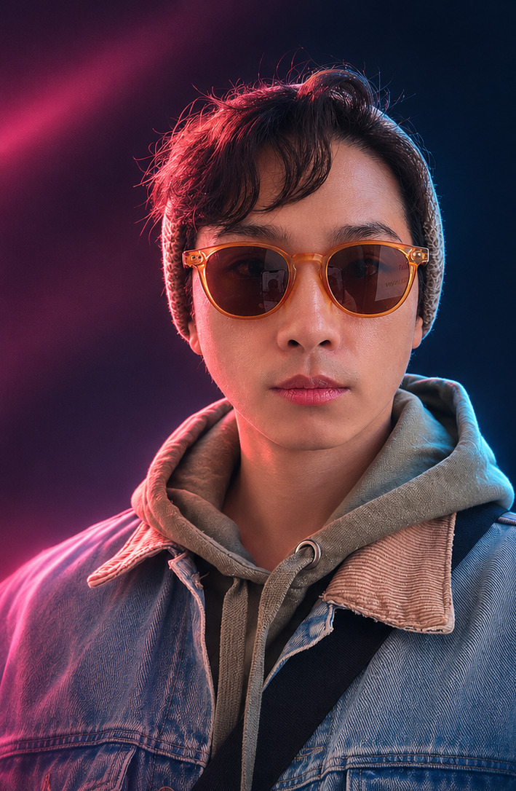

Stories
Thoughtful narratives, original concepts, and fresh perspectives.
 ss+Creative
ss+CreativeWe develop original stories, visual experiences, and creative works across formats. Guided by curiosity, shaped with care, and made to be shared.
Reach usFrom moving images to written stories and visual art, we explore the medium that best serves each idea. We're building a home for original work that informs, entertains, inspires, or simply offers another way of looking at the world.
Thoughtful narratives, original concepts, and fresh perspectives.
Documentaries, travel features, digital video, and audiovisual projects.
Visual exploration, digital art, and ideas that find unexpected forms.

Yan is a creative spirit with a deep enthusiasm for documentaries, film, cinematography, sound, music, and visual aesthetics. A history geek and foodie at heart, he is not a director or an actor, but he has always been drawn to the performing arts and to the quiet art of capturing daily moments, stories, and details that make everyday life meaningful.